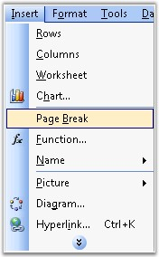
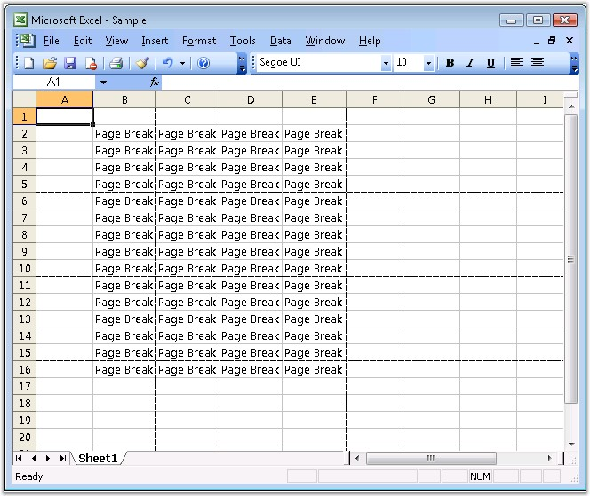

Page Breaks are dividers that break a worksheet into separate pages for printing. To print a worksheet with the exact number of pages that you want, you can adjust the page breaks in the worksheet before you print it. Excel inserts automatic page breaks, based on the paper size, margin settings, scaling options, and the positions of any manual page breaks that you insert, and it also allows to insert/remove breaks at preferred locations.

Figure 112: Insert menu -> Page Break
XlsIO provides support for inserting/removing Horizontal and Vertical page breaks in a worksheet by using the IHPagebreak and IVPagebreak interfaces.
 Note: By default, page breaks are not shown in the
Normal view. However, you can view them by inserting new page breaks.
Note: By default, page breaks are not shown in the
Normal view. However, you can view them by inserting new page breaks.
|
[C#]
// Entering text into the cells. sheet.Range["A1:M20"].Text = "PageBreak";
// Giving Horizontal Page Breaks. sheet.HPageBreaks.Add(sheet.Range["A5"]); sheet.HPageBreaks.Add(sheet.Range["A10"]); sheet.HPageBreaks.Add(sheet.Range["A15"]);
// Giving Vertical Page Breaks. sheet.VPageBreaks.Add(sheet.Range["B5"]); sheet.VPageBreaks.Add(sheet.Range["E10"]); sheet.VPageBreaks.Add(sheet.Range["K15"]); |
|
[VB.NET]
' Entering text into the cells. sheet.Range("A1:M20").Text = "PageBreak"
' Giving Horizontal Page Breaks. sheet.HPageBreaks.Add(sheet.Range("A5")) sheet.HPageBreaks.Add(sheet.Range("A10")) sheet.HPageBreaks.Add(sheet.Range("A15"))
' Giving Vertical Page Breaks. sheet.VPageBreaks.Add(sheet.Range("B5")) sheet.VPageBreaks.Add(sheet.Range("E10")) sheet.VPageBreaks.Add(sheet.Range("K15")) |

Figure 113: XlsIO with Page Breaks
You can also display or hide page breaks in the normal view by using the DisplayPageBreaks property of IWorksheet.